Amber & Ink · a music video · the making-of
F-in perfect Every Dent
How a song about the marks a life leaves became her notebook at midnight: the song written out as it's sung, every line she tried first still there and struck through, every mark her day leaves landing on the page, and the gold she mends them with drawing each one into something that sings. Six days, three sessions, one notebook drawn by code, and not one picture generated.
Watch Every Dent on YouTube (3:08; age-restricted there for its language, so YouTube asks you to sign in).
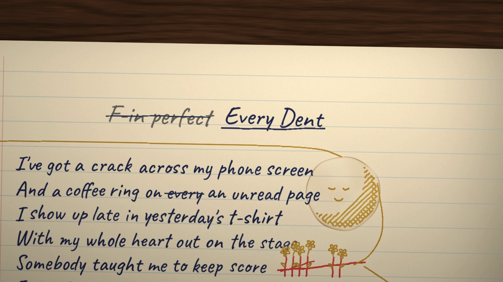
01 · the songEvery dent in me is proof I tried
The song is 's, made in Suno and credited to Amber & Ink: crooked UK garage art-pop, 3:08, one voice, hers, alone with a detuned guitar at the start and under a huge choir of herself by the end. Its words were drafted by Claude Opus 4.8 in the songwriter's own lyric tool and revised there, and the history of every line survives: what was tried, what was struck, what was kept. Its first draft, on a blank page, was called "F-in Perfect".
It has dents of its own. The mix drops to digital silence inside "dropped-call", cuts three times through "airbrushed", stops dead before the outro and cuts off mid-groove at the end. And the last chorus turns the earlier ones' "not the airbrushed kind" into "not the hairbrushed kind", which a transcriber hears as "washed".
It is 'hairbrushed'. I put that deliberately and Suno managed to enunciate it well enough to keep.The songwriter, before a single frame was made
02 · the timings · 22 October to 6 NovemberGlitch, not lyric
A film where words appear as they're sung needs every syllable timed. A speech model hears the song, an aligner matches what it heard to the real lyrics, and then the ear decides: six rounds of a check video, each word lit as it's sung, the songwriter noting the ones that came early or late. 141 pins in all, each with its reason. A sparse mix of hats, rims and clicks fooled the machine at every turn: its silences read as dropouts.
Lots sounds like dropouts and crashbacks, but they're just the regular sound of the mix.
And every chorus stutters, "eh-eh-every", "N-n-n-not". Printed, a stutter is a typo; sung, it's the song breaking up on purpose.
It's glitch rather than printable lyric.
03 · the story · 6 NovemberHer page
The story proposed was the plainest one: the song is her page. Late at night, Amber, before she ever met Ink, writes it in her notebook as she sings it.
I think it's literally the song as she's writing it; this is her notebook, her thoughts.
So the lines she tried first are on the page too, struck through, and they're the song's real drafts, from the lyric tool's history. Her day leaves its marks on the page as the song names them: the crack across her phone screen, a coffee ring, a red-pen score, a glass of wine knocked over. When she sings "mended", gold ink draws each mark into something, and in the last chorus the drawings sing along.
The end result is the full song, warts and all on the scribbled page.
No hands, and no pen. A pen was tried in verse 1 both ways and dropped:
I feel like it's likely to look like a gimmick unless we can either make use of it, or animate it with the writing, but even so it would need a hand, which would potentially be a nightmare to get right.
The words write themselves.
04 · the first rough · 6 NovemberOne notebook, drawn by code
Everything in the film is one model of her notebook in Python: two A4 pages on a desk under a lamp, each word laid out on its rule in a handwriting font and timed to its syllables, each mark with the moment it lands. The storyboard's sixteen frames were drawn by that model, and the same model, given a camera, drew the whole song: the first rough, the evening the story was chosen. It was approved as it stood, and from then on every change was a change to the model, never to a picture.
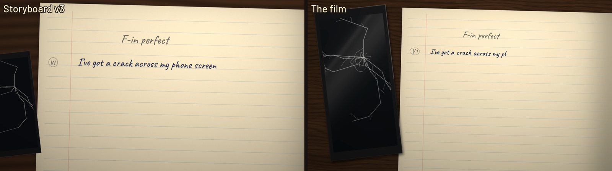
05 · the method · 7 to 8 NovemberSeven lenses, twelve roughs
Then the film went through lenses, one at a time, each a single question asked of every moment on one page, a map of the film: content (does each moment show what's sung?), attention (where does the eye go?), motion (does the camera move like a hand would?), seams (does each section grow out of the last?), characters (what do her marks become?), words (does the writing look written?) and look (is each thing a step nearer the real thing?). Each was drafted on the map, agreed, built into the next rough, reviewed and approved before the next began. Twelve roughs of the whole song in three days, each about half an hour to render.
The attention lens has a tool of its own: a modelled eye that watches each rough and reports, for every moment that matters, whether the eye got there, and when. It caught that verse 1's crack, a thin line on a dark phone at the frame's edge, was never looked at; the look lens's broken glass, catching the lamp, is what finally drew it.
06 · 0:00 · verse 1I've got a crack across my phone screen
The first rough followed the writing, and so it lost what happened elsewhere: the crack, the gold, the singers, the title. The content lens sent the camera where things are made, out to the phone as its line is written, back as the coffee ring lands with its mug's shadow.
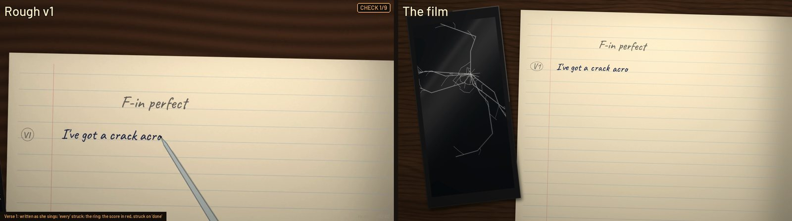
07 · 0:32 · the pre-chorusesSo call me a mess
A rim-shot lands on "mess" like a slap, and the words do what they're told: the line is thrown up off its rule and falls back crooked. The first version dropped too fast:
The words jump down a bit too quickly.
So the motion lens gave them weight: up and over in 0.4 s with a bounce, and they lift again on her harmonies and settle askew on the clicks.
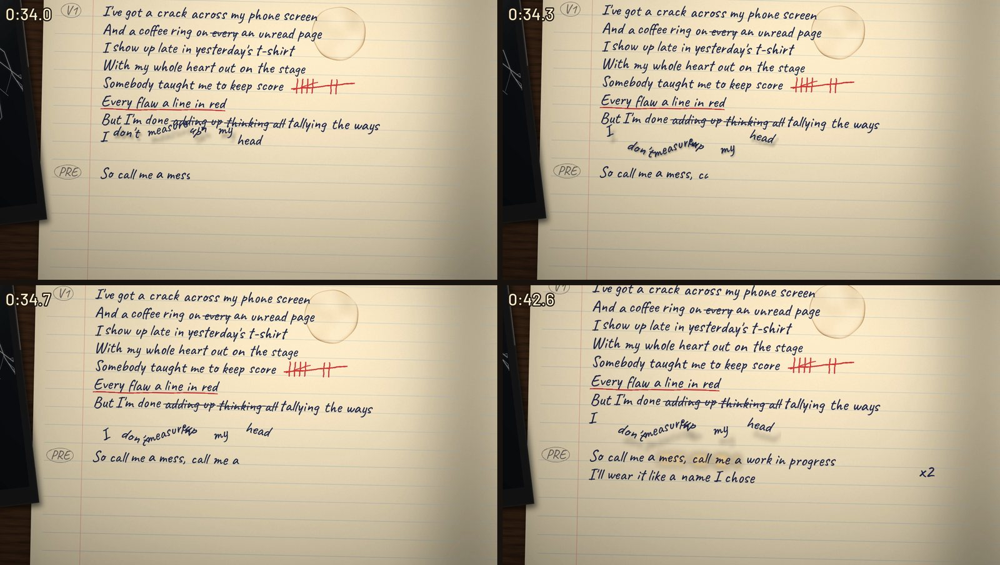
08 · 0:49 · chorus 1The dropped-call, spilled-wine kind
The working title's "f-in" is struck as the chorus opens on the song's one real dropout. Through the mix's three cuts in "airbrushed", her pen fails: no ink over a cut, only its line pressed bare into the paper, the ink coming back unevenly. The first try lifted the pen and left strokes out, and a stroke left out is a different letter:
Dropped is less dropped than before and reads more like droppod-call.
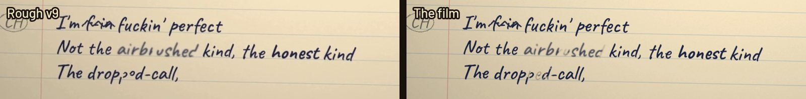
Then the glass goes over, on "spilled-wine", and the stain spreads down the page. On "proof I tried" three tried lines follow, struck through one a beat.
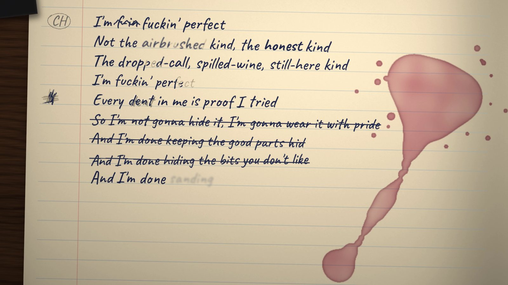
09 · 0:59 · her pen skippingEh-eh-every
The stutter became her pen skipping, the songwriter's own idea:
I wonder if the e-e-e glitch could be her scribbling her pen to get it working.
The first scribbles were loops, and "the circles and dots don't read as getting a pen working". The note that fixed them is a precise description of a dry biro:
More likely to be a few quick left/right up/down zig-zags with the start being just marking the paper, no ink, with the ink coming unevenly to begin with.
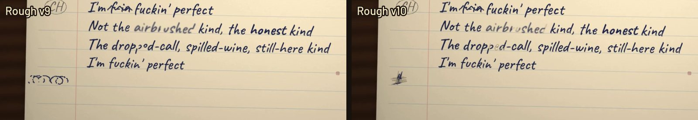
And on the last review, one more thought, which the film took:
The scribbles would land better if the pen starts going wrong on the 'perfect' beforehand, which is also nicely ironic.
10 · 1:11 · verse 2 and pre-chorus 3Too much room
The camera breathes out across the gutter to the other page. "Too much room, too loud" grows as it's written, "rewrote myself in smaller letters" shrinks, and a line she sings to the mirror is written mirrored. Pre-chorus 3 stretches to twice its length in the song, so its words stretch with it, the spaces pulling wider like an elastic band, until it's let go and the camera snaps back across the spread to chorus 1. The first snap was a glide; then a snap too quick to catch; then a spring, let go on the beat, its overshoot settling on the downbeat two beats later, 0.94 s in all.
It doesn't seem to snap back.
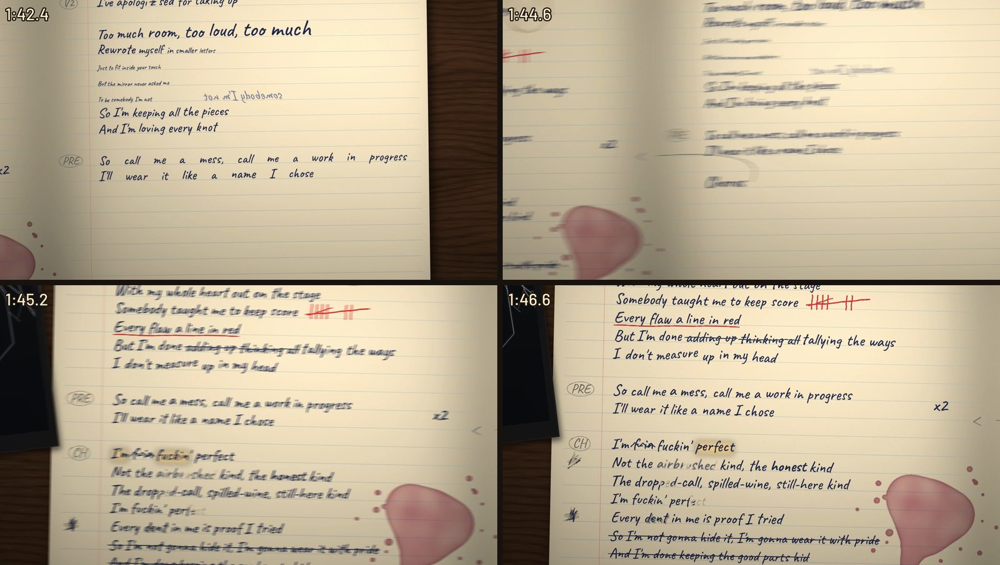
One idea was tried here and dropped: the camera stepping syllable by syllable through "So I'm keeping all the pieces". It fit the sound and not the film.
The skip is a good skip motion in that it fits the sound, but it doesn't work here.
11 · 1:45 · chorus 2Back up the page
Chorus 2 isn't written out again. She's singing what's already there, so the camera goes back up the page and each word warms under the lamp as she sings it. One thing is new, the songwriter's note on an early rough: a splash of wine, landing in "kind" and soaking into it, so she writes it again beside the stain.
12 · 2:07 · the bridgeThe ones who call you broken
The bridge is written slowly, its tries struck, and the page tears on "broken". On "mended" the tear is taped. The first idea was gold stitching, the kintsugi of it; the songwriter turned it into something a person would do to a page:
The fix for the torn paper is a glittery sticker ... rather than gold stitching, which doesn't make sense for paper so much.
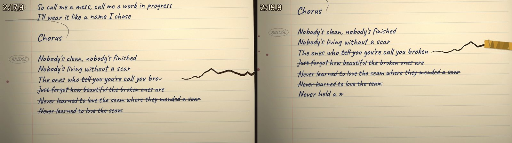
Then the gold runs on, one seam out of the foil and across the spread to every mark in turn, the camera riding its tip. It goes through the page's empty bands, never across a written line, which would read as striking it out.
13 · 2:21 · the mendInk-blot art
What each mark becomes was the characters lens, and the readings are the songwriter's own, from the marks' shapes:
This kind of ink-blot-art is about responding to the shape and finding something interesting in it.
The crack stays a tree. The coffee ring becomes a cross-hatched moon, the tally a row of flowers, the spill an elephant's head with the run of wine its trunk, the small splash a raspberry, the last splash a cartoon star. Each is drawn in flat gold ink in the page, never floating over it, and moves only by being redrawn in a new pose on its own beat. Animated as pieces, they "seem to sit separately from it because they're animated", as the first try was told.
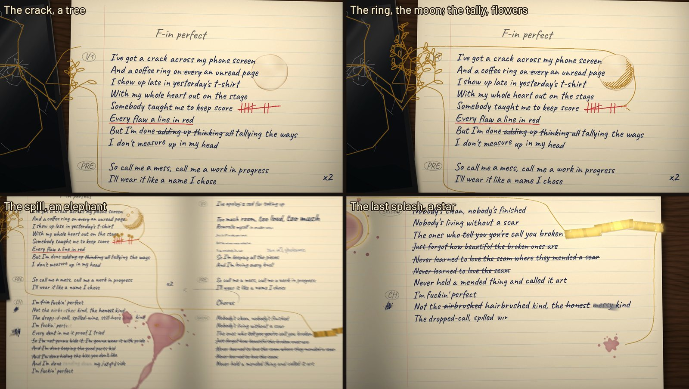
14 · 2:26 · the final chorusNot the hairbrushed kind
The last chorus is written out fresh, because its words changed, and the drawings sing it: rowdily, out of step with each other, never as a tidy choir.
Choir isn't really the word I'd use, more like rowdy singing.
Each line's own singer mouths it, though, and that took a note. The moon's open mouth was a tall oval under squinting eyes, swapped on the beat whatever was sung, which is a yawn.
He's not matching the music terribly well, so seems like he's yawning or something.
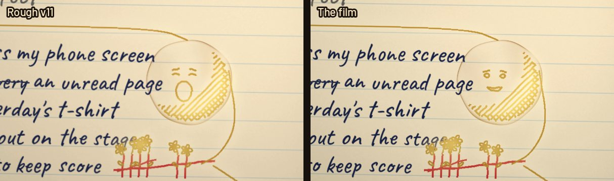
15 · 2:48 · the outroHum, and shut
The lamp goes out on the song's dead stop. Then six hums, each by one of the drawings, and they had their eyes shut and their mouths flat:
The characters with their eyes closed look like they're asleep, rather than humming.
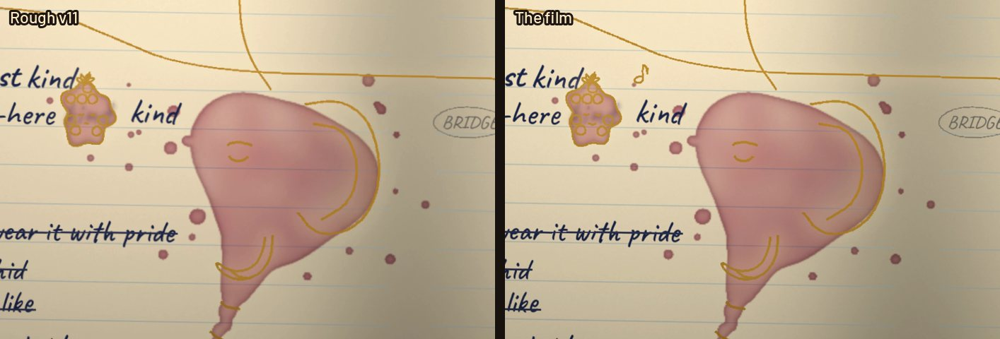
As the hums end she strikes the working title, the song's first, and writes its real one, and underlines it. The song cuts off dead, mid-groove, and the notebook slams shut on it.
16 · her hand · 8 NovemberStroke by stroke
For eight roughs each word was its font, revealed left to right like a wipe, and close up the wipe sliced a letter as it went. The words lens traced the font's letters into the strokes a hand would make and timed every ink pixel to when the pen reaches it, so each letter grows along its strokes in a hand's order, the i's dotted last. Her hand is never the same twice either: one of the font's three sets of letters for each word, a slight turn, a touch bigger or smaller, a line drifting off its rule toward the end.
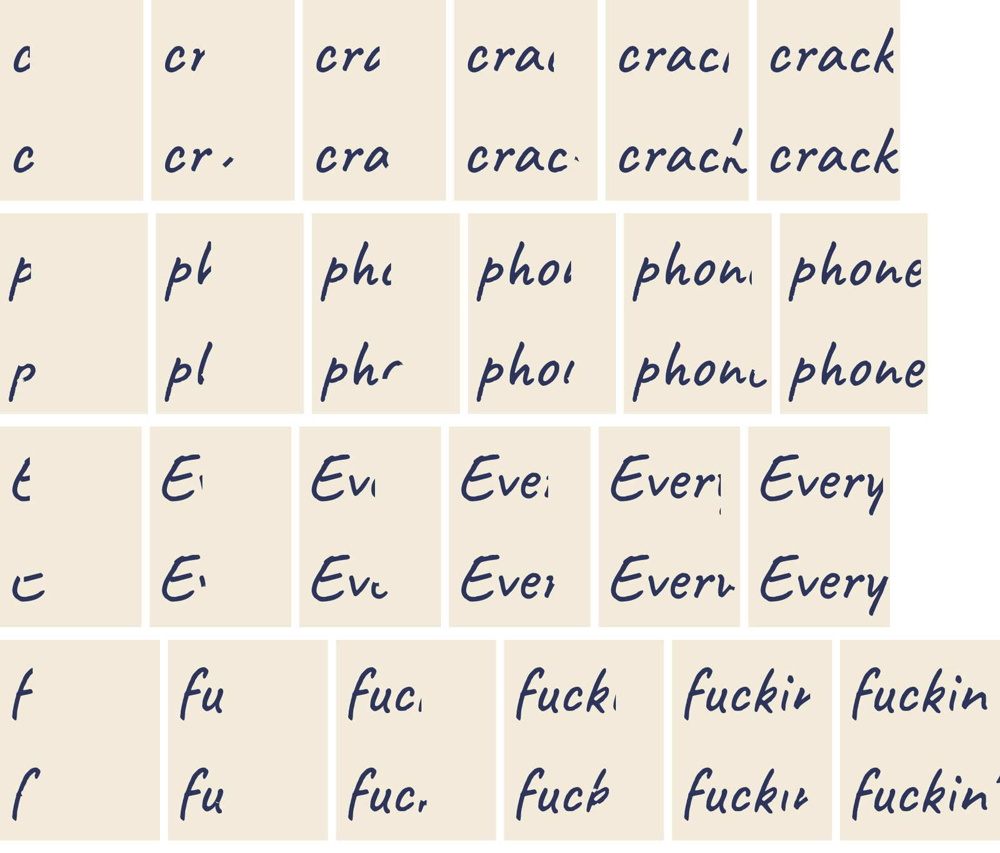
17 · the look · 8 NovemberA step nearer the real thing
The look was right from the first rough, and the songwriter was "hesitant to interfere at all", with one slight steer: the phone's crack and the coffee ring. Then, on a later rough:
It only becomes apparent on the pulled back shots, how small the phone is compared to what I assume is an A4 pad.
It was half a phone's size. So the look lens took each thing a step nearer how the real thing looks, drawn the same way, nothing photographic, and showed every option side by side on the film's own frames: the phone at its own size with a shadow, its crack as broken glass catching the lamp, the coffee dried to a tide line at its edge, the wine darker where it dried, a walnut desk, the foil glinting, a brown card cover.
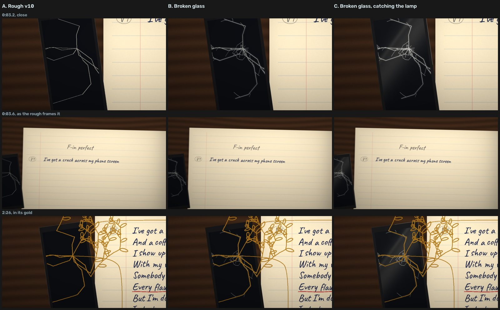
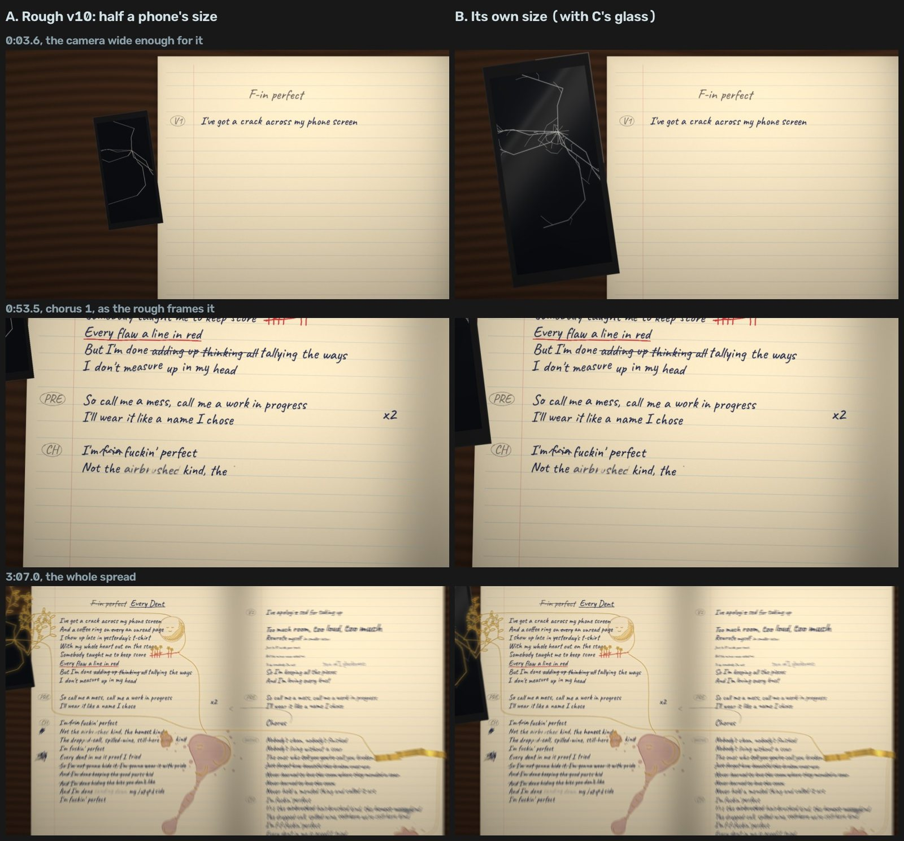
18 · the release · 9 NovemberUpright, and on a loop
The roughs ran at 1280×720; the film is 1920×1080, since the page is drawn a unit a pixel and the close camera sees more of it than 720 rows could hold. Its thumbnail is the title she lands on, cropped close so that it still reads at YouTube's smallest size.
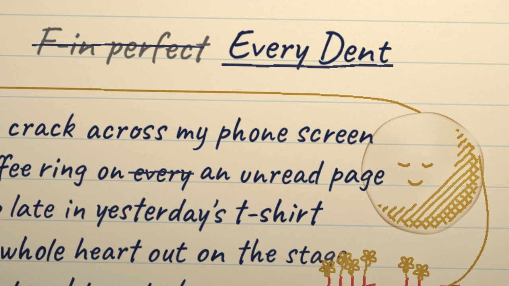
Its three Shorts aren't cropped from it. They're drawn upright by the same model at 1080×1920, the film's camera turned on its side, the page whole as she writes. A Short plays on a loop, so each one is whole bars of the song, the beat carrying through the seam, and at its end the camera settles back onto its first framing, so the only thing that changes at the loop is her page going back to how it was.
How does this work as a loop?
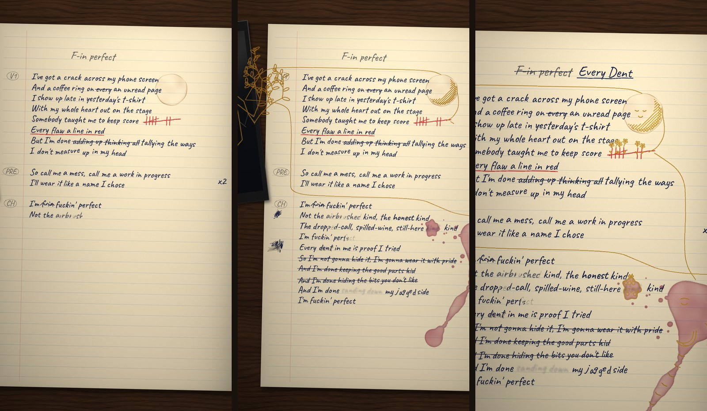
The song swears, sung and written, in every chorus. YouTube restricted one Short for it, and the rest were restricted before they could be. Nothing was bleeped.
If the short isn't suitable for < 18+ then the film isn't either, and we're not going to censor that either.
19 · the readoutBy the numbers
- 6
- days worked, 21 October to 9 November, about 15 hours of active work in three sessions
- 141
- timing pins, each with its reason, after six rounds of the songwriter's ear
- 293
- words sung, every one written stroke by stroke as it's sung
- 7
- lenses, each drafted, agreed, built and approved
- 12
- roughs of the whole song, then the cut
- 53
- prompts from the songwriter, 1,724 words in all
- 3,800
- lines of Python of the film's own (her notebook, her hand, the camera, the Shorts), on a kit of 18,800 shared with the channel's other films
- 0
- pictures generated: every frame is drawn by code
20 · the methodHow it was made
- The song: Suno, the lyrics drafted by Claude Opus 4.8 in the songwriter's lyric tool and revised with them; its stems and MIDI read for the beats, the sections and the voices.
- The timings: Whisper and a forced aligner, then the ear: a check video a round, pins placed from the vocal stem's consonants.
- The film: one model of her notebook in Python (NumPy, OpenCV, Pillow): the pages, the words on their rules, each mark and what it becomes, the camera worked out exactly at every frame and blurred when it moves fast. Rendered in parallel, a chunk of the song a process, joined under the mix.
- Her hand: the Caveat font traced into strokes; every ink pixel given the moment the pen reaches it; a failing pen and a skipping one.
- The lenses: a map of the film on one page, a modelled eye for attention, a measure of every camera move against the beat, side-by-side studies for the look.
- Made with Claude Opus 5.5 in Claude Code: story, storyboard, the model, her hand, animation and every script, with directing.
Mirrors and echoes
 SodiumAmber & Ink · the making-ofThe same Amber, later, with Ink: a night carer walking home at 3am through a real town, texting the one who couldn't face coming out.
SodiumAmber & Ink · the making-ofThe same Amber, later, with Ink: a night carer walking home at 3am through a real town, texting the one who couldn't face coming out.
 While The Ceiling MovesAmber & Ink · the making-ofLater still: a family kitchen at night, his panic attack, and her voice on the phone, staying with him through it.
While The Ceiling MovesAmber & Ink · the making-ofLater still: a family kitchen at night, his panic attack, and her voice on the phone, staying with him through it.